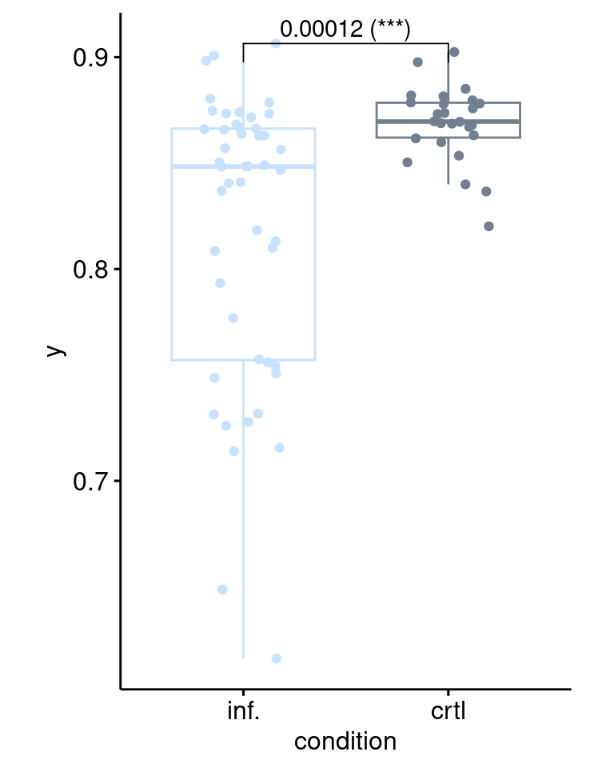
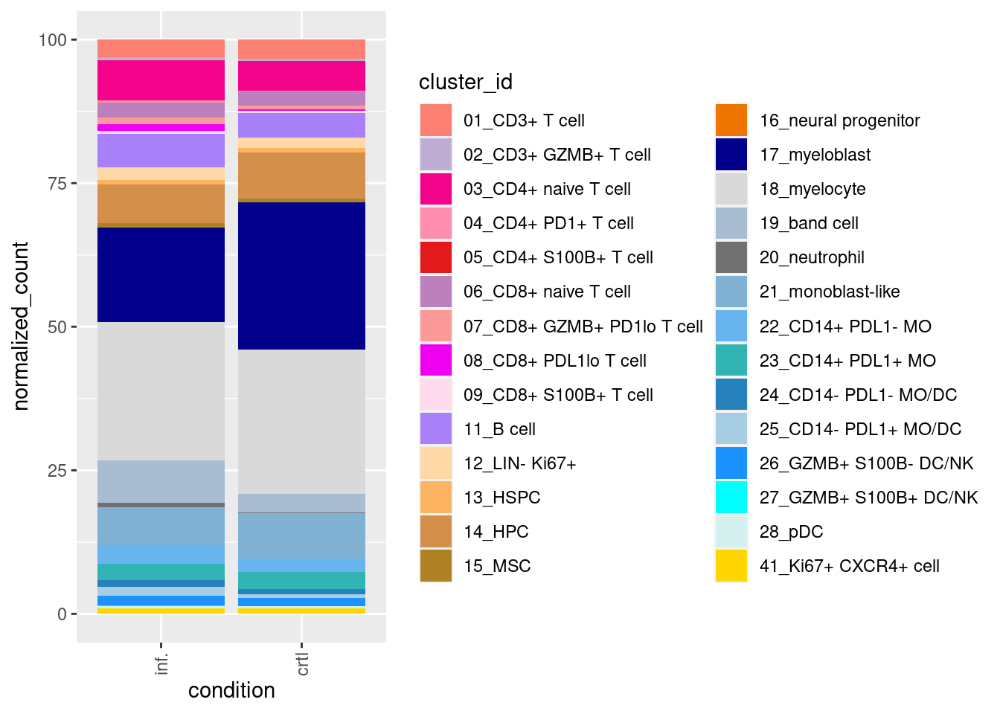

Last updated: 2024-03-30
Checks: 6 1
Knit directory: MapMetSC/
This reproducible R Markdown analysis was created with workflowr (version 1.7.1). The Checks tab describes the reproducibility checks that were applied when the results were created. The Past versions tab lists the development history.
The R Markdown is untracked by Git. To know which version of the R
Markdown file created these results, you’ll want to first commit it to
the Git repo. If you’re still working on the analysis, you can ignore
this warning. When you’re finished, you can run
wflow_publish to commit the R Markdown file and build the
HTML.
Great job! The global environment was empty. Objects defined in the global environment can affect the analysis in your R Markdown file in unknown ways. For reproduciblity it’s best to always run the code in an empty environment.
The command set.seed(20240314) was run prior to running
the code in the R Markdown file. Setting a seed ensures that any results
that rely on randomness, e.g. subsampling or permutations, are
reproducible.
Great job! Recording the operating system, R version, and package versions is critical for reproducibility.
Nice! There were no cached chunks for this analysis, so you can be confident that you successfully produced the results during this run.
Great job! Using relative paths to the files within your workflowr project makes it easier to run your code on other machines.
Great! You are using Git for version control. Tracking code development and connecting the code version to the results is critical for reproducibility.
The results in this page were generated with repository version 0ba6b0c. See the Past versions tab to see a history of the changes made to the R Markdown and HTML files.
Note that you need to be careful to ensure that all relevant files for
the analysis have been committed to Git prior to generating the results
(you can use wflow_publish or
wflow_git_commit). workflowr only checks the R Markdown
file, but you know if there are other scripts or data files that it
depends on. Below is the status of the Git repository when the results
were generated:
Untracked files:
Untracked: analysis/06_PT_DE_DA.Rmd
Untracked: analysis/06_PT_DE_cellularcomm.Rmd
Untracked: analysis/07_BM_CRTLvsINF_DA.Rmd
Untracked: analysis/07_PTvsBM_DA.Rmd
Unstaged changes:
Modified: analysis/05_correlation_Jansky.Rmd
Modified: analysis/05_correlation_Lee.Rmd
Note that any generated files, e.g. HTML, png, CSS, etc., are not included in this status report because it is ok for generated content to have uncommitted changes.
There are no past versions. Publish this analysis with
wflow_publish() to start tracking its development.
Next, to understand how metastasis affects the microenvironment at the metastatic site, we investigate the TME composition in control (non-infiltrated) versus tumor-infiltrated BM samples.
library(diffcyt)
library(SingleCellExperiment)Loading required package: SummarizedExperimentLoading required package: MatrixGenericsLoading required package: matrixStats
Attaching package: 'MatrixGenerics'The following objects are masked from 'package:matrixStats':
colAlls, colAnyNAs, colAnys, colAvgsPerRowSet, colCollapse,
colCounts, colCummaxs, colCummins, colCumprods, colCumsums,
colDiffs, colIQRDiffs, colIQRs, colLogSumExps, colMadDiffs,
colMads, colMaxs, colMeans2, colMedians, colMins, colOrderStats,
colProds, colQuantiles, colRanges, colRanks, colSdDiffs, colSds,
colSums2, colTabulates, colVarDiffs, colVars, colWeightedMads,
colWeightedMeans, colWeightedMedians, colWeightedSds,
colWeightedVars, rowAlls, rowAnyNAs, rowAnys, rowAvgsPerColSet,
rowCollapse, rowCounts, rowCummaxs, rowCummins, rowCumprods,
rowCumsums, rowDiffs, rowIQRDiffs, rowIQRs, rowLogSumExps,
rowMadDiffs, rowMads, rowMaxs, rowMeans2, rowMedians, rowMins,
rowOrderStats, rowProds, rowQuantiles, rowRanges, rowRanks,
rowSdDiffs, rowSds, rowSums2, rowTabulates, rowVarDiffs, rowVars,
rowWeightedMads, rowWeightedMeans, rowWeightedMedians,
rowWeightedSds, rowWeightedVarsLoading required package: GenomicRangesLoading required package: stats4Loading required package: BiocGenerics
Attaching package: 'BiocGenerics'The following objects are masked from 'package:stats':
IQR, mad, sd, var, xtabsThe following objects are masked from 'package:base':
anyDuplicated, append, as.data.frame, basename, cbind, colnames,
dirname, do.call, duplicated, eval, evalq, Filter, Find, get, grep,
grepl, intersect, is.unsorted, lapply, Map, mapply, match, mget,
order, paste, pmax, pmax.int, pmin, pmin.int, Position, rank,
rbind, Reduce, rownames, sapply, setdiff, sort, table, tapply,
union, unique, unsplit, which.max, which.minLoading required package: S4Vectors
Attaching package: 'S4Vectors'The following objects are masked from 'package:base':
expand.grid, I, unnameLoading required package: IRangesLoading required package: GenomeInfoDbLoading required package: BiobaseWelcome to Bioconductor
Vignettes contain introductory material; view with
'browseVignettes()'. To cite Bioconductor, see
'citation("Biobase")', and for packages 'citation("pkgname")'.
Attaching package: 'Biobase'The following object is masked from 'package:MatrixGenerics':
rowMediansThe following objects are masked from 'package:matrixStats':
anyMissing, rowMedianslibrary(CATALYST)
library(dplyr)
Attaching package: 'dplyr'The following object is masked from 'package:Biobase':
combineThe following objects are masked from 'package:GenomicRanges':
intersect, setdiff, unionThe following object is masked from 'package:GenomeInfoDb':
intersectThe following objects are masked from 'package:IRanges':
collapse, desc, intersect, setdiff, slice, unionThe following objects are masked from 'package:S4Vectors':
first, intersect, rename, setdiff, setequal, unionThe following objects are masked from 'package:BiocGenerics':
combine, intersect, setdiff, unionThe following object is masked from 'package:matrixStats':
countThe following objects are masked from 'package:stats':
filter, lagThe following objects are masked from 'package:base':
intersect, setdiff, setequal, unionlibrary(tidyr)
Attaching package: 'tidyr'The following object is masked from 'package:S4Vectors':
expandlibrary(BioQC)
library(ComplexHeatmap)Loading required package: grid========================================
ComplexHeatmap version 2.12.1
Bioconductor page: http://bioconductor.org/packages/ComplexHeatmap/
Github page: https://github.com/jokergoo/ComplexHeatmap
Documentation: http://jokergoo.github.io/ComplexHeatmap-reference
If you use it in published research, please cite either one:
- Gu, Z. Complex heatmaps reveal patterns and correlations in multidimensional
genomic data. Bioinformatics 2016.
- Gu, Z. Complex Heatmap Visualization. iMeta 2022.
The new InteractiveComplexHeatmap package can directly export static
complex heatmaps into an interactive Shiny app with zero effort. Have a try!
This message can be suppressed by:
suppressPackageStartupMessages(library(ComplexHeatmap))
========================================library(viridis)Loading required package: viridisLitelibrary(circlize)========================================
circlize version 0.4.15
CRAN page: https://cran.r-project.org/package=circlize
Github page: https://github.com/jokergoo/circlize
Documentation: https://jokergoo.github.io/circlize_book/book/
If you use it in published research, please cite:
Gu, Z. circlize implements and enhances circular visualization
in R. Bioinformatics 2014.
This message can be suppressed by:
suppressPackageStartupMessages(library(circlize))
========================================library(ggplot2)
library(gridExtra)
Attaching package: 'gridExtra'The following object is masked from 'package:dplyr':
combineThe following object is masked from 'package:Biobase':
combineThe following object is masked from 'package:BiocGenerics':
combinelibrary(ggpubr)
library(rstatix)
Attaching package: 'rstatix'The following object is masked from 'package:IRanges':
descThe following object is masked from 'package:stats':
filterlibrary(gridExtra)
library(gtools)First, we load the processed and phenotyped single-cell data from chapter 4.
spe <- readRDS(file.path(params$output,"spe_final.rds"))We will then transform the SPE object into a catalyst-compatible object.
keep_rows <- rowData(spe)$use_channel Loading required package: SpatialExperimentkeep_cols <- spe$tissue=="BM" & spe$celltype != "other" & (spe$timepoint=="DE"|spe$timepoint=="") & spe$metacluster!="tumor" & spe$metacluster!="mesenchymal"
sce <- SingleCellExperiment(assays=list(counts=assay(spe, "counts")[keep_rows, keep_cols], exprs=assay(spe, "counts")[keep_rows, keep_cols]))
#recode metadata on progression
sce$progress <- factor(spe[keep_rows, keep_cols]$progression)
progress <- recode(sce$progress, `0` = 'NoProg', `1` = 'Prog')
sce$progress <- as.factor(progress)
#recode metadata on crtl/inf
sce$control <- factor(spe[keep_rows, keep_cols]$control)
control <- recode(sce$control, `yes` = 'crtl', `no` = 'inf.')
sce$control <- as.factor(control)
#recode metadata on MYCN amplification
sce$mna <- factor(spe[keep_rows, keep_cols]$MYCN_amp)
mna <- recode(sce$mna, `1` = 'MNA', `2` = 'het', `0` = 'nMNA', `9` = 'unknown')
sce$mna <- as.factor(mna)
sce$patient <- factor(spe[keep_rows, keep_cols]$study_id)
sce$fm_id <- spe[keep_rows, keep_cols]$fm_id
sce$tissue <- factor(spe[keep_rows, keep_cols]$tissue)
sce$sample_id <- factor(paste0(sce$progress, "_", sce$mna, "_", sce$patient, "_", sce$fm_id, "_", sce$tissue))
sce$age_diag <- spe[keep_rows, keep_cols]$age_diag
sce$solidity_clipped <- spe[keep_rows, keep_cols]$solidity_clipped
sce$condition <- sce$control
sce$cluster_id <- factor(spe[keep_rows, keep_cols]$celltype_ordered)
sce$metacluster <- factor(spe[keep_rows, keep_cols]$metacluster)
# Add celltype information to metadata
metadata(sce)$cluster_codes <- data.frame(celltype = factor(spe[keep_rows, keep_cols]$celltype_ordered))
# Add metadata
metadata(sce)$experiment_info <- as.data.frame(colData(sce)) %>% group_by(sample_id,patient, mna, condition, progress) %>%
summarise(n_cells=n(),.groups = 'drop') %>%
as.data.frame()
# Define cell_type_markers
type_markers <- c("MPO_Y89_mean", "CD44_In115_mean", "CD11b_Nd142_mean", "HLA-DR_Nd143_mean", "PRPH_Nd144_mean", "HLA-ABC_Sm147_mean", "CD20_Nd148_mean", "LUM_Sm149_mean", "CD11c_Nd150_mean",
"CD24_Eu151_mean", "CD3_Sm152_mean", "CD45_Eu153_mean", "CD8a_Sm154_mean", "GD2_Gd155_mean", "CD34_Gd156_mean", "CD10_Gd158_mean", "CXCR4_Tb159_mean","SOX10_Dy162_mean",
"FOXP3_Dy163_mean", "CHGA_Dy164_mean", "GATA3_Er168_mean", "CD56_Er170_mean", "CD4_Yb171_mean", "ELAVL4_Yb174_mean", "CD14_Lu175_mean", "Vimentin_Pt196_mean", "CD15_Bi209_mean")
# Define cell_state_markers
state_markers <- c("CD274_Gd160_mean", "S100B_Dy161_mean", "CD279_Ho165_mean", "Ki-67_Tm169_mean", "GZMB_Yb173_mean")
# Add to sce
rowData(sce)$marker_class <- ifelse(rownames(sce) %in% type_markers, "type",
ifelse(rownames(sce) %in% state_markers, "state",
"other"))Next, we plot an overview of TME celltype abundances in crtl and infl. BM samples.
set.seed(20231103)
p <- plotAbundances(sce, k = "celltype", by = "sample", col_clust=T, k_pal=metadata(spe)$color_vectors$col_celltype_ordered,
linkage="ward.D", distance="manhattan")
pWe save the order of the clustered samples to be able to plot corresponding metadata.
condition <- c("crtl", "inf.")
clustered_samples <- list()
for (i in seq_along(condition)){
clustered_samples <- c(clustered_samples, sub(".*_([^_]+_[^_]+$)", "\\1", levels(droplevels(p$data[p$data$condition==condition[i],]$sample_id))))
}
clustered_samples <- as.character(clustered_samples)We compute TME intra-sample heterogeneity.
prop <- p$data %>%
select(-condition) %>%
pivot_wider(names_from = cluster_id, values_from = Freq)
prop <- data.frame(prop)
rownames(prop) <- prop$sample_id
prop <- prop %>% select(-sample_id)
prop <- t(prop)
rownames(prop) <- levels(sce$cluster_id)
colnames(prop) <- sub(".*_([^_]+_[^_]+$)", "\\1", colnames(prop))
prop <- prop[,clustered_samples]
het <- apply(prop,2, entropy)Then we plot intra-sample heterogeneity together with sample-specific metadata for the clustered samples.
#access sample-level data
sample_summary <- as.data.frame(colData(sce)) %>%
group_by(sample_id) %>%
summarize(mna = first(mna),
progress=first(progress),
control = first(control),
age_diag = first(age_diag)
)
sample_summary <- as.data.frame(sample_summary)
rownames(sample_summary) <- sub(".*_([^_]+_[^_]+$)", "\\1", sample_summary$sample_id)
sample_summary <- sample_summary %>% select(-sample_id)
sample_summary <- sample_summary[clustered_samples,]
#assign color codes
col_code <- c("MNA"=rgb(202,0,32, maxColorValue = 255),
"het"=rgb(146,197,222, maxColorValue = 255),
"nMNA"=rgb(5,113,176, maxColorValue = 255),
"Prog"=rgb(202,0,32, maxColorValue = 255),
"NoProg"=rgb(5,113,176, maxColorValue = 255)
)
col_age_diag = colorRamp2(c(min(sce$age_diag, na.rm = TRUE), (quantile(sce$age_diag, 0.95, na.rm = TRUE)-min(sce$age_diag, na.rm = TRUE))/2, quantile(sce$age_diag,0.95, na.rm = TRUE)), viridis(3))
col_het = colorRamp2(c(min(het, na.rm = TRUE), (max(het, na.rm = TRUE)-min(het, na.rm = TRUE))/2, max(het, na.rm = TRUE)), viridis(3))
# Plot metadata
columnAnnotation(MYCN_amp=sample_summary$mna, col=list(MYCN_amp=col_code)) %v%
columnAnnotation(progression=sample_summary$progress, col=list(progression=col_code)) %v%
columnAnnotation(age=sample_summary$age_diag, col=list(age=col_age_diag)) %v%
columnAnnotation(het=het, col=list(het=col_het))To investigate the shift in granulocyte maturity upon metastasis, we plot the mean granulocyte roundness per sample.
sce$sample <- sub(".*_([^_]+_[^_]+$)", "\\1", sce$sample_id)
df <- aggregate(sce[,sce$metacluster=="granulocyte"]$solidity_clipped, list(sce[,sce$metacluster=="granulocyte"]$sample), mean)
rownames(df) <- df[,1]
df <- df[-c(1)]
colnames (df) <- "y"
df$condition <- sample_summary[rownames(df),]$control
stats_df <- compare_means(y ~ condition,
method='wilcox.test',
data = df)
stats_df$p_adj_signif <- stars.pval(stats_df$p.adj)
stats_df$p_adj_signif[stats_df$p_adj_signif==" "] <- "ns"
stats_df$p_long <- paste0(stats_df$p.adj, " (", stats_df$p_adj_signif, ")")
p <- ggboxplot(df, x = "condition", y = "y",
color = "condition", palette =c("slategray1", "slategray"),
add.params = list(size = 1.5),
add = "jitter")+
stat_pvalue_manual(stats_df, label = "p_long", y.position = max(df$y), step.increase = 0.2,) +
theme(aspect.ratio = 1.5, legend.position="none")
p
We first prepare data for DA analysis using the diffcyt
package.
#list of samples as input to diffcyt methods
df_list <- lapply(unique(sce$sample_id), function(x){as.data.frame(t(counts(sce[,sce$sample_id==x])))})
names(df_list) <- unique(sce$sample_id)
#experiment info
experiment_info <- metadata(sce)$experiment_info
experiment_info <- experiment_info[match(names(df_list),experiment_info$sample_id),]
#marker info
channel_name <- sapply(strsplit(rownames(rowData(spe)[keep_rows,]), "_"), "[[", 2)
marker_name <- sapply(strsplit(rownames(rowData(spe)[keep_rows,]), "_"), "[[", 1)
marker_class <-ifelse(rownames(spe)[keep_rows] %in% type_markers, "type",
ifelse(rownames(spe)[keep_rows] %in% state_markers, "state",
"other"))
row_data <- data.frame(cbind(channel_name, marker_name), row.names=marker_name)
row_data$marker_class <- as.factor(marker_class)
marker_info <- row_data
#prepare data into format for diffcyt pipeline
d_se <- prepareData(df_list, experiment_info, marker_info)
rowData(d_se)$cluster_id <- sce[,rownames(d_se)]$cluster_id
metadata(d_se)$cluster_codes <- metadata(sce)$cluster_codes
# Transform data
d_se <- transformData(d_se)
# Calculate counts
d_counts <- calcCounts(d_se)Subsequently, we perform the DA analysis comparing celltype proportions between crtl and inf. BM samples.
design <- createDesignMatrix(experiment_info, cols_design = "condition")
contrast <- createContrast(c(0, 1))
nrow(contrast) == ncol(design)[1] TRUE# Test for differential abundance (DA) of clusters
res_DA <- testDA_edgeR(d_counts,design, contrast,
min_cells=3,
min_samples=round(dim(d_counts)[2]*0.05)
)
FDR_cutoff = 0.1
rowData(res_DA)[rowData(res_DA)$p_adj<FDR_cutoff,]DataFrame with 2 rows and 6 columns
cluster_id logFC logCPM LR p_val
<factor> <numeric> <numeric> <numeric> <numeric>
19_band cell 19_band cell -1.15313 15.8575 11.6931 6.27317e-04
20_neutrophil 20_neutrophil -2.66601 12.4340 22.6360 1.95783e-06
p_adj
<numeric>
19_band cell 8.78244e-03
20_neutrophil 5.48192e-05res<- data.frame(rowData(res_DA))Finally, we visualize DA results in boxplots.
p <- plotAbundances(sce, k = "celltype", by = "cluster_id", shape_by = "sample_id")At most 17 shapes are currently supported but 74 are required; setting 'shape_by' to NULL.comparisons <- c("crtlvsinf.")
ord <- c("crtl", "inf.")
plot_list_fc <- list()
for(i in 1:length(unique(p$data$cluster_id))){
cluster_name <- unique(p$data$cluster_id)[i]
proportions <- data.frame(p$data[p$data$cluster_id == cluster_name, c("sample_id", "condition", "Freq")])
p_adj <- c()
group1 <- c()
group2 <- c()
logFC <- c()
for(j in 1:1){
stats <- res
p_adj <- c(p_adj, round(stats[rownames(stats)==droplevels(cluster_name), "p_adj"],3))
logFC <- c(logFC, -1*round(stats[rownames(stats)==droplevels(cluster_name), "logFC"],2))
group1 <- c(group1, unlist(strsplit(comparisons[j], "vs"))[1])
group2 <- c(group2, unlist(strsplit(comparisons[j], "vs"))[2])
}
stats_df <- data.frame(p_adj=p_adj, group1=group1, group2=group2, logFC=logFC)
stats_df$p_adj_signif <- stars.pval(stats_df$p_adj)
stats_df$p_adj_signif[stats_df$p_adj_signif==" "] <- "ns"
stats_df$p_fc <- paste0(stats_df$logFC, " (", stats_df$p_adj, ")", " (", stats_df$p_adj_signif, ")")
color <- unname(metadata(spe)$color_vectors$col_celltype_ordered[as.character(cluster_name)])
plot_list_fc[[i]] <- ggboxplot(proportions, x = "condition", y = "Freq", order=ord,
color = "condition", palette =c(color, color),
add.params = list(size = 1.5),
add = "jitter",
title=cluster_name, show.legend = F) +
stat_pvalue_manual(
stats_df,
y.position = max(proportions$Freq),
step.increase = 0.4,
label = "p_fc"
) +
theme(aspect.ratio = 1.5, legend.position="none") +
scale_y_continuous(expand = expansion(mult = c(0.05, 0.15)))
}
grid.arrange(grobs = plot_list_fc, ncol = 4)Finally we plot the mean celltype abundance over all samples per condition.
df_normalized <- p$data %>%
group_by(cluster_id, condition) %>%
summarise(normalized_count = mean(Freq, na.rm = TRUE)) %>%
ungroup()`summarise()` has grouped output by 'cluster_id'. You can override using the
`.groups` argument.df_normalized$cluster_id <- factor(df_normalized$cluster_id)
ggplot(df_normalized, aes(fill=cluster_id, y=normalized_count, x=condition)) +
geom_bar(
stat="identity",
show.legend = T) +
scale_fill_manual(values = metadata(spe)$color_vectors$col_celltype_ordered) +
theme(axis.text.x = element_text(angle = 90, vjust = 0.5, hjust=1)) ## Session Info
R version 4.2.0 (2022-04-22)
Platform: x86_64-pc-linux-gnu (64-bit)
Running under: Ubuntu 20.04.4 LTS
Matrix products: default
BLAS: /usr/lib/x86_64-linux-gnu/openblas-pthread/libblas.so.3
LAPACK: /usr/lib/x86_64-linux-gnu/openblas-pthread/liblapack.so.3
locale:
[1] LC_CTYPE=en_US.UTF-8 LC_NUMERIC=C
[3] LC_TIME=en_US.UTF-8 LC_COLLATE=en_US.UTF-8
[5] LC_MONETARY=en_US.UTF-8 LC_MESSAGES=en_US.UTF-8
[7] LC_PAPER=en_US.UTF-8 LC_NAME=C
[9] LC_ADDRESS=C LC_TELEPHONE=C
[11] LC_MEASUREMENT=en_US.UTF-8 LC_IDENTIFICATION=C
attached base packages:
[1] grid stats4 stats graphics grDevices utils datasets
[8] methods base
other attached packages:
[1] SpatialExperiment_1.6.1 gtools_3.9.5
[3] rstatix_0.7.2 ggpubr_0.6.0
[5] gridExtra_2.3 ggplot2_3.4.4
[7] circlize_0.4.15 viridis_0.6.4
[9] viridisLite_0.4.2 ComplexHeatmap_2.12.1
[11] BioQC_1.24.0 tidyr_1.3.0
[13] dplyr_1.1.4 CATALYST_1.20.1
[15] SingleCellExperiment_1.20.1 SummarizedExperiment_1.26.1
[17] Biobase_2.56.0 GenomicRanges_1.48.0
[19] GenomeInfoDb_1.32.4 IRanges_2.30.1
[21] S4Vectors_0.34.0 BiocGenerics_0.42.0
[23] MatrixGenerics_1.8.1 matrixStats_1.1.0
[25] diffcyt_1.16.0 workflowr_1.7.1
loaded via a namespace (and not attached):
[1] utf8_1.2.4 R.utils_2.12.3
[3] tidyselect_1.2.0 lme4_1.1-35.1
[5] BiocParallel_1.30.4 Rtsne_0.17
[7] DropletUtils_1.16.0 aws.signature_0.6.0
[9] flowCore_2.8.0 ScaledMatrix_1.4.1
[11] munsell_0.5.0 codetools_0.2-18
[13] interp_1.1-5 withr_3.0.0
[15] colorspace_2.1-0 highr_0.10
[17] knitr_1.45 rstudioapi_0.15.0
[19] ggsignif_0.6.4 labeling_0.4.3
[21] git2r_0.33.0 GenomeInfoDbData_1.2.8
[23] polyclip_1.10-6 farver_2.1.1
[25] pheatmap_1.0.12 rhdf5_2.40.0
[27] flowWorkspace_4.8.0 rprojroot_2.0.4
[29] vctrs_0.6.5 generics_0.1.3
[31] TH.data_1.1-2 xfun_0.41
[33] R6_2.5.1 doParallel_1.0.17
[35] ggbeeswarm_0.7.2 clue_0.3-65
[37] rsvd_1.0.5 locfit_1.5-9.8
[39] rhdf5filters_1.8.0 bitops_1.0-7
[41] cachem_1.0.8 DelayedArray_0.22.0
[43] promises_1.2.1 scales_1.3.0
[45] multcomp_1.4-25 beeswarm_0.4.0
[47] gtable_0.3.4 beachmat_2.12.0
[49] Cairo_1.6-2 processx_3.8.3
[51] RProtoBufLib_2.8.0 sandwich_3.1-0
[53] rlang_1.1.3 GlobalOptions_0.1.2
[55] splines_4.2.0 hexbin_1.28.3
[57] broom_1.0.5 yaml_2.3.8
[59] reshape2_1.4.4 abind_1.4-5
[61] backports_1.4.1 httpuv_1.6.13
[63] RBGL_1.72.0 tools_4.2.0
[65] jquerylib_0.1.4 RColorBrewer_1.1-3
[67] ggridges_0.5.5 Rcpp_1.0.12
[69] plyr_1.8.9 base64enc_0.1-3
[71] sparseMatrixStats_1.8.0 zlibbioc_1.42.0
[73] purrr_1.0.2 RCurl_1.98-1.14
[75] ps_1.7.6 FlowSOM_2.4.0
[77] deldir_2.0-2 GetoptLong_1.0.5
[79] cowplot_1.1.2 zoo_1.8-12
[81] ggrepel_0.9.5 cluster_2.1.3
[83] colorRamps_2.3.1 fs_1.6.3
[85] magrittr_2.0.3 magick_2.8.2
[87] ncdfFlow_2.42.1 data.table_1.14.10
[89] scattermore_1.2 mvtnorm_1.2-4
[91] whisker_0.4.1 ggnewscale_0.4.9
[93] evaluate_0.23 XML_3.99-0.16
[95] jpeg_0.1-10 shape_1.4.6
[97] ggcyto_1.24.1 compiler_4.2.0
[99] scater_1.24.0 tibble_3.2.1
[101] crayon_1.5.2 R.oo_1.25.0
[103] ggpointdensity_0.1.0 minqa_1.2.6
[105] htmltools_0.5.7 later_1.3.2
[107] RcppParallel_5.1.7 aws.s3_0.3.21
[109] DBI_1.2.1 tweenr_2.0.2
[111] MASS_7.3-56 boot_1.3-28
[113] Matrix_1.6-5 car_3.1-2
[115] cli_3.6.2 R.methodsS3_1.8.2
[117] parallel_4.2.0 igraph_1.6.0
[119] pkgconfig_2.0.3 getPass_0.2-4
[121] scuttle_1.6.3 xml2_1.3.6
[123] foreach_1.5.2 vipor_0.4.7
[125] bslib_0.6.1 dqrng_0.3.2
[127] XVector_0.36.0 drc_3.0-1
[129] stringr_1.5.1 callr_3.7.3
[131] digest_0.6.34 ConsensusClusterPlus_1.60.0
[133] graph_1.74.0 rmarkdown_2.25
[135] edgeR_3.38.4 DelayedMatrixStats_1.18.2
[137] curl_5.2.0 rjson_0.2.21
[139] nloptr_2.0.3 lifecycle_1.0.4
[141] nlme_3.1-157 jsonlite_1.8.8
[143] Rhdf5lib_1.18.2 BiocNeighbors_1.14.0
[145] carData_3.0-5 limma_3.52.4
[147] fansi_1.0.6 pillar_1.9.0
[149] lattice_0.20-45 fastmap_1.1.1
[151] httr_1.4.7 plotrix_3.8-4
[153] survival_3.3-1 glue_1.7.0
[155] png_0.1-8 iterators_1.0.14
[157] Rgraphviz_2.40.0 HDF5Array_1.24.2
[159] ggforce_0.4.1 stringi_1.8.3
[161] sass_0.4.8 nnls_1.5
[163] BiocSingular_1.12.0 CytoML_2.8.0
[165] latticeExtra_0.6-30 cytolib_2.8.0
[167] irlba_2.3.5.1
sessionInfo()R version 4.2.0 (2022-04-22)
Platform: x86_64-pc-linux-gnu (64-bit)
Running under: Ubuntu 20.04.4 LTS
Matrix products: default
BLAS: /usr/lib/x86_64-linux-gnu/openblas-pthread/libblas.so.3
LAPACK: /usr/lib/x86_64-linux-gnu/openblas-pthread/liblapack.so.3
locale:
[1] LC_CTYPE=en_US.UTF-8 LC_NUMERIC=C
[3] LC_TIME=en_US.UTF-8 LC_COLLATE=en_US.UTF-8
[5] LC_MONETARY=en_US.UTF-8 LC_MESSAGES=en_US.UTF-8
[7] LC_PAPER=en_US.UTF-8 LC_NAME=C
[9] LC_ADDRESS=C LC_TELEPHONE=C
[11] LC_MEASUREMENT=en_US.UTF-8 LC_IDENTIFICATION=C
attached base packages:
[1] grid stats4 stats graphics grDevices utils datasets
[8] methods base
other attached packages:
[1] SpatialExperiment_1.6.1 gtools_3.9.5
[3] rstatix_0.7.2 ggpubr_0.6.0
[5] gridExtra_2.3 ggplot2_3.4.4
[7] circlize_0.4.15 viridis_0.6.4
[9] viridisLite_0.4.2 ComplexHeatmap_2.12.1
[11] BioQC_1.24.0 tidyr_1.3.0
[13] dplyr_1.1.4 CATALYST_1.20.1
[15] SingleCellExperiment_1.20.1 SummarizedExperiment_1.26.1
[17] Biobase_2.56.0 GenomicRanges_1.48.0
[19] GenomeInfoDb_1.32.4 IRanges_2.30.1
[21] S4Vectors_0.34.0 BiocGenerics_0.42.0
[23] MatrixGenerics_1.8.1 matrixStats_1.1.0
[25] diffcyt_1.16.0 workflowr_1.7.1
loaded via a namespace (and not attached):
[1] utf8_1.2.4 R.utils_2.12.3
[3] tidyselect_1.2.0 lme4_1.1-35.1
[5] BiocParallel_1.30.4 Rtsne_0.17
[7] DropletUtils_1.16.0 aws.signature_0.6.0
[9] flowCore_2.8.0 ScaledMatrix_1.4.1
[11] munsell_0.5.0 codetools_0.2-18
[13] interp_1.1-5 withr_3.0.0
[15] colorspace_2.1-0 highr_0.10
[17] knitr_1.45 rstudioapi_0.15.0
[19] ggsignif_0.6.4 labeling_0.4.3
[21] git2r_0.33.0 GenomeInfoDbData_1.2.8
[23] polyclip_1.10-6 farver_2.1.1
[25] pheatmap_1.0.12 rhdf5_2.40.0
[27] flowWorkspace_4.8.0 rprojroot_2.0.4
[29] vctrs_0.6.5 generics_0.1.3
[31] TH.data_1.1-2 xfun_0.41
[33] R6_2.5.1 doParallel_1.0.17
[35] ggbeeswarm_0.7.2 clue_0.3-65
[37] rsvd_1.0.5 locfit_1.5-9.8
[39] rhdf5filters_1.8.0 bitops_1.0-7
[41] cachem_1.0.8 DelayedArray_0.22.0
[43] promises_1.2.1 scales_1.3.0
[45] multcomp_1.4-25 beeswarm_0.4.0
[47] gtable_0.3.4 beachmat_2.12.0
[49] Cairo_1.6-2 processx_3.8.3
[51] RProtoBufLib_2.8.0 sandwich_3.1-0
[53] rlang_1.1.3 GlobalOptions_0.1.2
[55] splines_4.2.0 hexbin_1.28.3
[57] broom_1.0.5 yaml_2.3.8
[59] reshape2_1.4.4 abind_1.4-5
[61] backports_1.4.1 httpuv_1.6.13
[63] RBGL_1.72.0 tools_4.2.0
[65] jquerylib_0.1.4 RColorBrewer_1.1-3
[67] ggridges_0.5.5 Rcpp_1.0.12
[69] plyr_1.8.9 base64enc_0.1-3
[71] sparseMatrixStats_1.8.0 zlibbioc_1.42.0
[73] purrr_1.0.2 RCurl_1.98-1.14
[75] ps_1.7.6 FlowSOM_2.4.0
[77] deldir_2.0-2 GetoptLong_1.0.5
[79] cowplot_1.1.2 zoo_1.8-12
[81] ggrepel_0.9.5 cluster_2.1.3
[83] colorRamps_2.3.1 fs_1.6.3
[85] magrittr_2.0.3 magick_2.8.2
[87] ncdfFlow_2.42.1 data.table_1.14.10
[89] scattermore_1.2 mvtnorm_1.2-4
[91] whisker_0.4.1 ggnewscale_0.4.9
[93] evaluate_0.23 XML_3.99-0.16
[95] jpeg_0.1-10 shape_1.4.6
[97] ggcyto_1.24.1 compiler_4.2.0
[99] scater_1.24.0 tibble_3.2.1
[101] crayon_1.5.2 R.oo_1.25.0
[103] ggpointdensity_0.1.0 minqa_1.2.6
[105] htmltools_0.5.7 later_1.3.2
[107] RcppParallel_5.1.7 aws.s3_0.3.21
[109] DBI_1.2.1 tweenr_2.0.2
[111] MASS_7.3-56 boot_1.3-28
[113] Matrix_1.6-5 car_3.1-2
[115] cli_3.6.2 R.methodsS3_1.8.2
[117] parallel_4.2.0 igraph_1.6.0
[119] pkgconfig_2.0.3 getPass_0.2-4
[121] scuttle_1.6.3 xml2_1.3.6
[123] foreach_1.5.2 vipor_0.4.7
[125] bslib_0.6.1 dqrng_0.3.2
[127] XVector_0.36.0 drc_3.0-1
[129] stringr_1.5.1 callr_3.7.3
[131] digest_0.6.34 ConsensusClusterPlus_1.60.0
[133] graph_1.74.0 rmarkdown_2.25
[135] edgeR_3.38.4 DelayedMatrixStats_1.18.2
[137] curl_5.2.0 rjson_0.2.21
[139] nloptr_2.0.3 lifecycle_1.0.4
[141] nlme_3.1-157 jsonlite_1.8.8
[143] Rhdf5lib_1.18.2 BiocNeighbors_1.14.0
[145] carData_3.0-5 limma_3.52.4
[147] fansi_1.0.6 pillar_1.9.0
[149] lattice_0.20-45 fastmap_1.1.1
[151] httr_1.4.7 plotrix_3.8-4
[153] survival_3.3-1 glue_1.7.0
[155] png_0.1-8 iterators_1.0.14
[157] Rgraphviz_2.40.0 HDF5Array_1.24.2
[159] ggforce_0.4.1 stringi_1.8.3
[161] sass_0.4.8 nnls_1.5
[163] BiocSingular_1.12.0 CytoML_2.8.0
[165] latticeExtra_0.6-30 cytolib_2.8.0
[167] irlba_2.3.5.1